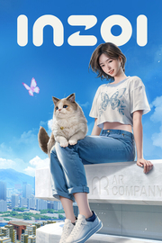

INZOI
Detalles
|  | |
| Tiempo de juego | No Jugado |
| Última actividad | Nunca |
| Añadido | 4/4/2025 2:38:57 |
| Modificado | 4/12/2025 17:51:10 |
| Estado de finalización | Not Played |
| Librería | Playnite |
| Fuente | 4TB TANK |
| Plataforma | PC (Windows) |
| Fecha de lanzamiento | 3/27/2025 |
| Puntuación de la Comunidad | 81 |
| Puntuación de la Crítica | |
| Puntuación de usuario | |
| Género | Acceso anticipado Aventura Casual Simuladores |
| Desarrollador | inZOI Studio |
| Editor | KRAFTON, Inc. |
| Característica | Cloud Saves Préstamo Familiar Un Jugador |
| Enlaces | Punto de encuentro Discusiones Guías Noticias Página de la tienda PCGamingWiki |
| Tag | Acceso anticipado Adorables Casuales Construcción Construcción de ciudades Contenido sexual Gatos Modernos Modificables Para toda la familia Personalización de personajes Realistas Relajantes Romance Sandbox Simulación Simulador de citas Simulador de vida Simulador inmersivo Un jugador |
Descripción
inZOI es un juego de simulación de vida en el que los jugadores desempeñan el papel de creadores, dando forma al mundo según su visión y presenciando las distintas historias que se desarrollan.
A través de esta experiencia inmersiva, nuestro objetivo es inspirar a los jugadores a apreciar la vida como el regalo maravilloso que es, un viaje repleto de significado en cada momento.
¡Adéntrate en vidas de lo más diversas con gráficos realistas!
inZOI ofrece una simulación comunitaria completamente funcional, donde los personajes, conocidos como Zois, viven con libre albedrío.
Los Zois realizan acciones y entablan relaciones en función de sus personalidades y experiencias, lo que genera acontecimientos inesperados como rumores, tendencias y enfermedades.

Toma el control de ciudades inspiradas en lugares reales y conviértelas en el escenario perfecto para tus historias, modificando elementos como el clima, las características y las calles. Todo esto cobra vida con unos gráficos realistas impresionantes de la mano de Unreal Engine 5.


¡Da rienda suelta a tu imaginación con un sinfín de opciones de personalización!
inZOI ofrece herramientas de personalización avanzadas que permiten a los creadores diseñar libremente sus personajes y hacer realidad todo lo que imaginen.
Elige entre más de 250 opciones de personalización para crear tu propio Zoi, y ajusta todo lo que se te ocurra, desde el pelo, la piel y el aspecto físico hasta la ropa, los accesorios, la decoración de las uñas y muchos más detalles.

Combina diferentes elementos arquitectónicos como paredes, tejados, escaleras, vallas, plataformas y puertas para crear edificios únicos. Decora espacios con una gran variedad de objetos y personaliza tus muebles para que cada detalle sea único.
Con las funciones de captura facial y de movimiento de inZOI, podrás hacer que tus personajes cobren vida y crear vídeos impresionantes ambientados en el mundo que elijas.

¡Disfruta de la creatividad sin límites!
inZOI utiliza tecnología de IA generativa local para ofrecer a los creadores más opciones de personalización y que puedan disfrutar de una experiencia creativa muy intuitiva.
Solo tendrás que introducir indicaciones de texto para generar patrones e imágenes personalizados con los que crear vestimentas, accesorios y muebles a tu gusto. También podrás transformar imágenes 2D en objetos 3D dentro del juego o crear movimientos de personaje cargando archivos de vídeo.
¡Deja que tu imaginación cobre vida con estas potentes herramientas! Con una libertad creativa ilimitada, las posibilidades son infinitas.

¡Comparte tus creaciones y conecta con otros creadores!
Comparte fácilmente tus creaciones e interactua con otros creadores a través de Canvas, nuestra plataforma para compartir recursos dentro del juego.
Muestra a los demás tus personajes, casas e historias, o inspírate con las creaciones de otros creadores.
¡Únete a la comunidad global de creadores en Canvas y disfruta de una experiencia inZOI más conectada!